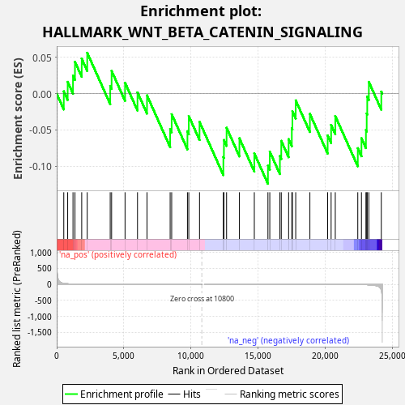
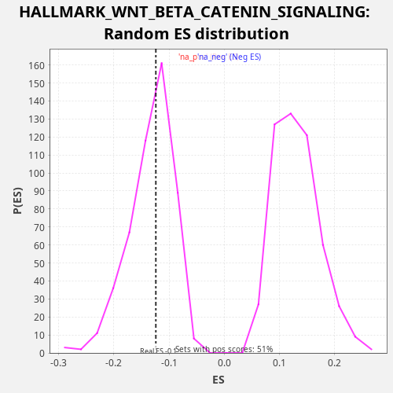

| Dataset | LabCL |
| Phenotype | NoPhenotypeAvailable |
| Upregulated in class | na_neg |
| GeneSet | HALLMARK_WNT_BETA_CATENIN_SIGNALING |
| Enrichment Score (ES) | -0.124066256 |
| Normalized Enrichment Score (NES) | -0.93419343 |
| Nominal p-value | 0.5272727 |
| FDR q-value | 0.5596113 |
| FWER p-Value | 1.0 |

| SYMBOL | RANK IN GENE LIST | RANK METRIC SCORE | RUNNING ES | CORE ENRICHMENT | |
|---|---|---|---|---|---|
| 1 | FZD1 | 528 | 28.735 | 0.0032 | No |
| 2 | SKP2 | 818 | 16.231 | 0.0162 | No |
| 3 | DKK1 | 1214 | 8.613 | 0.0249 | No |
| 4 | AXIN1 | 1360 | 6.997 | 0.0439 | No |
| 5 | DVL2 | 1863 | 3.608 | 0.0482 | No |
| 6 | WNT6 | 2273 | 2.330 | 0.0563 | No |
| 7 | NOTCH4 | 3986 | 0.583 | 0.0106 | No |
| 8 | HDAC11 | 4089 | 0.541 | 0.0314 | No |
| 9 | MAML1 | 5090 | 0.265 | 0.0150 | No |
| 10 | KAT2A | 6017 | 0.140 | 0.0018 | No |
| 11 | HEY2 | 6725 | 0.085 | -0.0024 | No |
| 12 | FZD8 | 8449 | 0.019 | -0.0486 | No |
| 13 | PPARD | 8562 | 0.017 | -0.0282 | No |
| 14 | NUMB | 9736 | 0.003 | -0.0517 | No |
| 15 | GNAI1 | 9836 | 0.002 | -0.0308 | No |
| 16 | AXIN2 | 10636 | 0.000 | -0.0388 | No |
| 17 | NCSTN | 12412 | -0.005 | -0.0871 | No |
| 18 | FRAT1 | 12453 | -0.005 | -0.0638 | No |
| 19 | RBPJ | 12651 | -0.007 | -0.0469 | No |
| 20 | PSEN2 | 13607 | -0.021 | -0.0614 | No |
| 21 | HEY1 | 14716 | -0.051 | -0.0822 | No |
| 22 | HDAC5 | 15731 | -0.096 | -0.0991 | Yes |
| 23 | CTNNB1 | 15868 | -0.103 | -0.0797 | Yes |
| 24 | HDAC2 | 16621 | -0.154 | -0.0858 | Yes |
| 25 | ADAM17 | 16724 | -0.162 | -0.0650 | Yes |
| 26 | CUL1 | 17271 | -0.215 | -0.0625 | Yes |
| 27 | LEF1 | 17509 | -0.244 | -0.0473 | Yes |
| 28 | NCOR2 | 17554 | -0.249 | -0.0241 | Yes |
| 29 | PTCH1 | 17800 | -0.281 | -0.0093 | Yes |
| 30 | MYC | 18855 | -0.470 | -0.0278 | Yes |
| 31 | NOTCH1 | 20178 | -0.945 | -0.0574 | Yes |
| 32 | DLL1 | 20436 | -1.083 | -0.0430 | Yes |
| 33 | WNT5B | 20746 | -1.292 | -0.0308 | Yes |
| 34 | JAG2 | 22422 | -4.901 | -0.0750 | Yes |
| 35 | TP53 | 22695 | -6.719 | -0.0613 | Yes |
| 36 | TCF7 | 23029 | -10.168 | -0.0500 | Yes |
| 37 | JAG1 | 23086 | -11.025 | -0.0273 | Yes |
| 38 | CSNK1E | 23126 | -11.573 | -0.0039 | Yes |
| 39 | NKD1 | 23245 | -13.778 | 0.0162 | Yes |
| 40 | CCND2 | 24173 | -179.177 | 0.0029 | Yes |

{kind=link}
{kind=link}